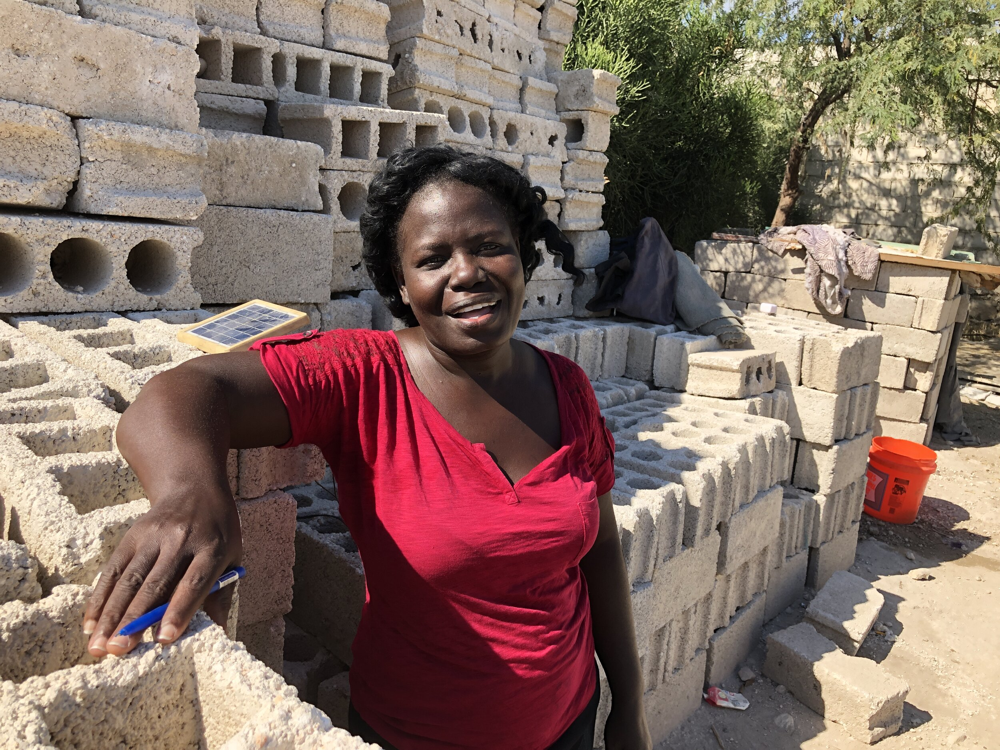
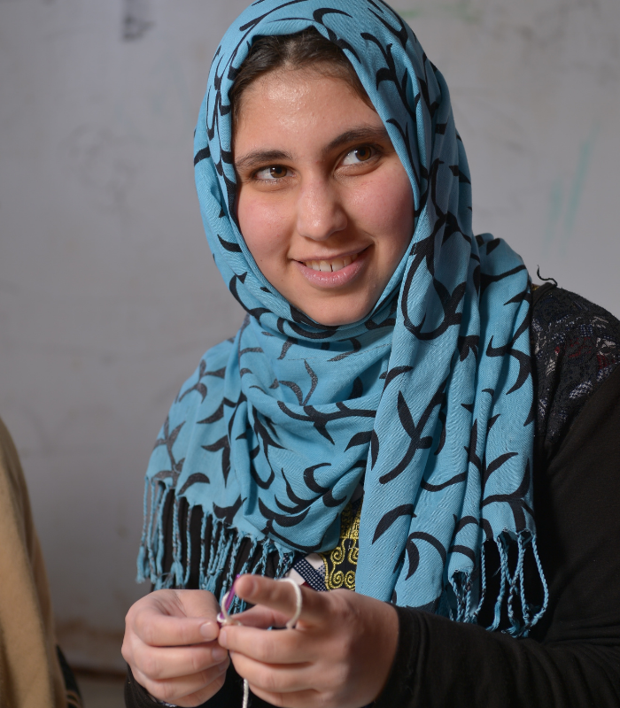
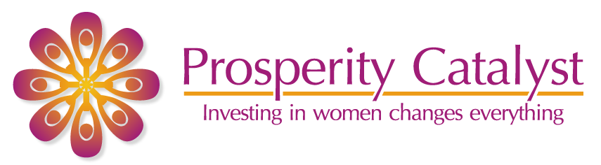

Initializing Folkmark Strategy Engine
Secured Artifact
Invalid Key
This is the center of gravity. Everything else in this system should reinforce, clarify, or demonstrate this idea—never compete with it.
As a new presidential administration takes office, the global development sector faces anticipated volatility and contracting institutional capital. Simultaneously, Prosperity Catalyst requires urgent reinvestment in Fundraising & Development, alongside the critical expansion of our export, import, and retail supply chains.
This brand refresh is the strategic foundation for that pivot. It equips leadership to project undeniable stability, defend existing funding, and confidently open new market channels.
Articulating the core principles of dignity, stewardship, and enterprise.
To expand economic possibility for women in places where opportunity has been constrained by instability, exclusion, and lack of access.
We envision a world where women in fragile environments are recognized as builders of households, markets, and long-term resilience.
Women are seen and supported as builders—never reduced to symbols of need.
The work is grounded in real pathways: skills, business support, investment, and opportunity.
We stay close to real people, real constraints, and real economic conditions.
Support is handled with care. The goal is lasting capacity and locally rooted strength.
Women-led enterprise in fragile contexts.
This is our lane. It avoids vague "empowerment" language, overly technical development jargon, and imported startup metaphors. It allows the organization to speak clearly about training, mentorship, income, market connection, and long-term resilience.
Prosperity Catalyst is a women’s enterprise organization working in Haiti and Iraq. It pairs practical training with one-on-one mentorship, early investment, and community networks to help women build income, confidence, and longer-term stability.
The work does not end at training. It is designed to support real economic participation.
Prosperity Catalyst creates practical pathways for women in Haiti and Iraq to build income, stability, and independence.
Through skills training, mentorship, early investment, and networks of support, we help women move from limited opportunity toward sustained economic participation. This is not abstract impact. It is grounded, human, and ongoing.
How we speak, what we highlight, and the language we avoid.
Our tone is human, not sentimental.
We show care without manipulation. We are economically literate, talking about work and income without turning people into abstractions. We are confident, never overclaiming.
These pillars ensure every piece of communication reinforces our central idea.
When women gain the means to earn, the effects extend beyond the individual. Households stabilize. Decisions shift. Standing changes. This is not symbolic—it is practical and visible.
Change starts with usable pathways. Skills that can be applied. Training that connects to income. Support that makes action possible. The outcome is participation, not mere completion.
Effort alone is not enough. Women need connection, access, visibility, and support systems. This is how enterprise becomes durable. We hold both economic and human realities together.
Use these stories consistently to make the pillars real.
Who we speak to, and what they need to hear.
These personas dictate our tone, our pacing, and our proof points.
A well-networked supporter who can move introductions, credibility, and opportunity across civic, faith, diaspora, and professional circles.
A high-capacity donor, family office principal, or senior patron looking for organizations that combine human seriousness with practical leverage.
A partner, buyer, institutional contact, or informed mid-level supporter who can strengthen the organization’s ecosystem over time.
Imagery and identity assets designed to honor dignity and command respect.
Our imagery should reflect capability, pride, focus, and real economic participation. We present women as makers, operators, leaders, and partners in enterprise. The goal of our photography is never pity, but profound respect and belief.


When utilizing video, select cuts where the subject discusses their craft, their business networks, and their personal command of the work. Avoid footage that isolates or diminishes the speaker.
The mathematical constraints and UI architectures required to scale the brand.
Typography is the primary vehicle for institutional authority.
The system employs a dual-typeface strategy to resolve the tension between heritage and modern utility. URW Classico operates as the display face, signaling stewardship and gravitas. Inter operates as the utility face, optimizing legibility and information density. Never alter tracking or leading outside defined parameters.
Narrative Body. Our supporters are not just donors; they are connectors, advocates, and long-term allies.
Color dictates mood and directs hierarchy.
The chromatic system rejects pure digital values (e.g., #000000, #FFFFFF) in favor of saturated, physical tones. Mineral White and Aubergine Black simulate the optical weight of premium print material, establishing a tactile, lived-in presence. Strict contrast pairings ensure accessibility without sacrificing the brand's quiet warmth.
Aa
Aa
Aa
Aa
Digital interfaces must not obfuscate intent.
Digital components are constructed using a subtractive methodology. Containers are implied through spatial proximity rather than heavy borders. Button architecture relies on physical drop-shadows mapped to the button's specific hue, activating only on user interaction to signify dimensional depth and operational readiness.
A brand operating in fragile global regions must project stability.
Consistency is maintained through a rigid mathematical coordinate system. The layout is anchored by a maximum width of 1600px. The 12-column grid dictates horizontal alignment, while vertical rhythm is governed by a fluid clamp-based scale. This ensures the structural integrity of the layout remains absolute across all viewport permutations.
The indelible mark of Prosperity Catalyst.
The icon and logotype must remain isolated within a strictly defined clear space, free from typographic or graphic interference. The primary full-color mark is anchored on Mineral White; the secondary whiteout mark is reserved exclusively for Aubergine Black or photographic overlays with sufficient contrast.

Demonstrating the system across physical, retail, and digital environments.
Annual Briefing
Prosperity Catalyst • 2026
Prepared for Catalytic Supporters
Hand-poured by the artisan women of Port-au-Prince.
100% Traceable
This framework is not a static rulebook; it is a strategic instrument. It is designed to be wielded by every executive, partner, and advocate of Prosperity Catalyst. As we move into a shifting global landscape, our clarity is our greatest asset. Use this voice to command rooms. Use this architecture to project undeniable capability. The women at the center of our work are building the future—our brand must possess the strength to match them.